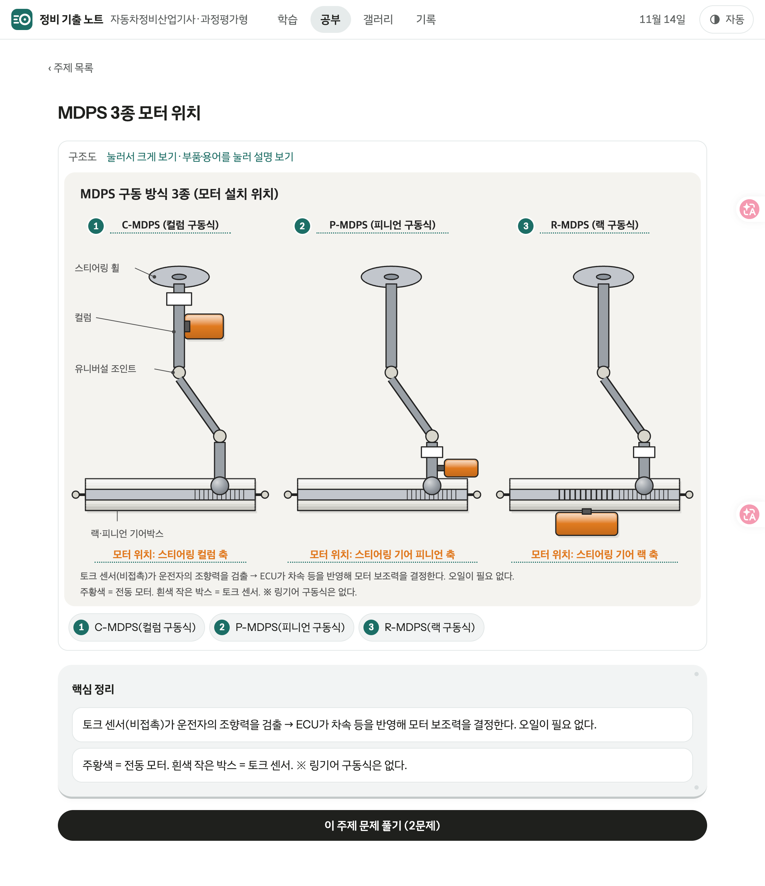

Maintenance past-exam notes
I added structure diagrams (MDPS motor location) and a photo gallery, and made wrong questions return in a review queue. On the study home, you can see proficiency by area and the number of questions waiting for review at a glance.


